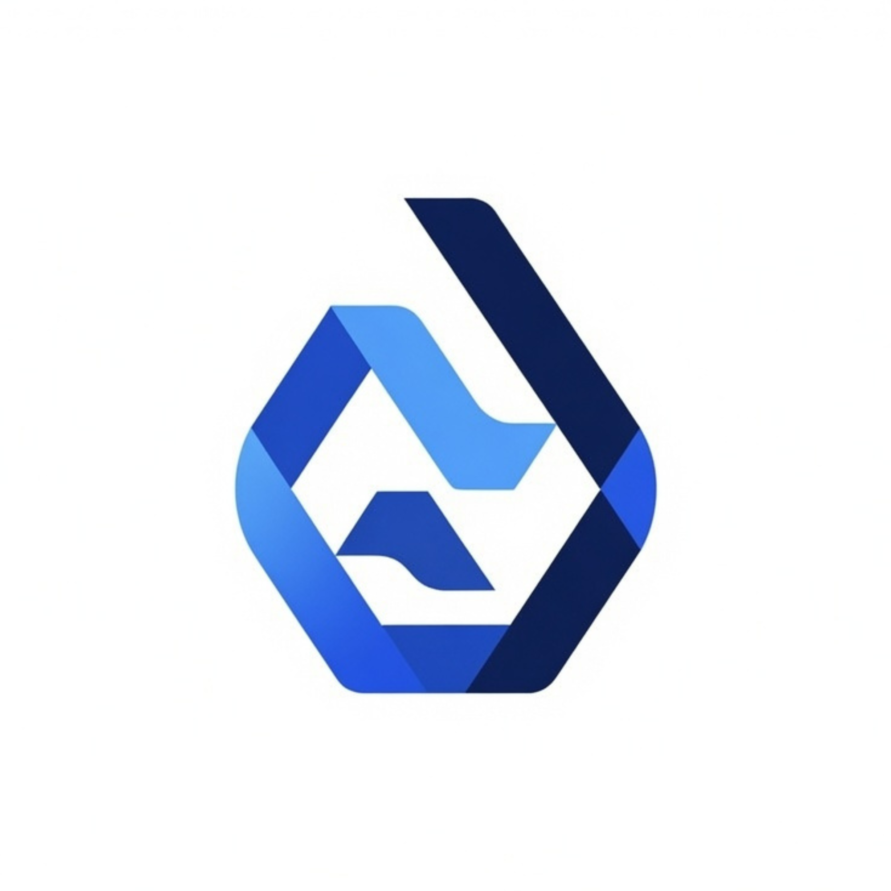
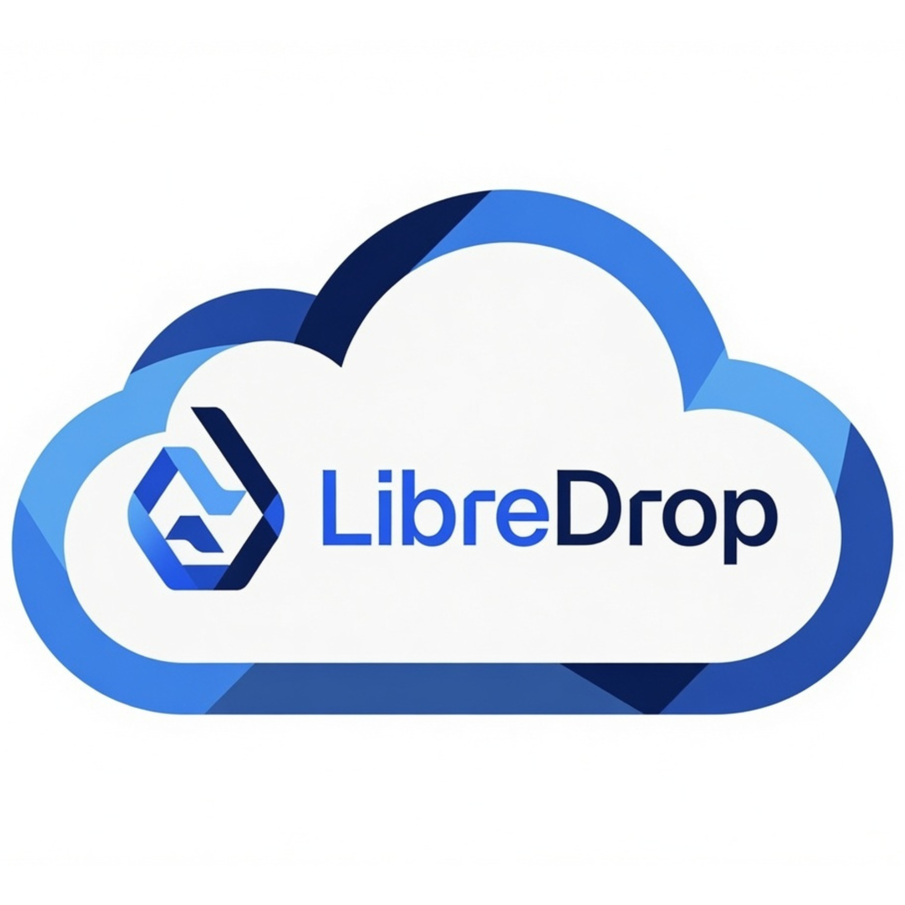

LibreDrop OSS
- Código abierto
- Instalación propia
- Control total
- Gratis
- Personalizable

Open Source Commerce. Simple. Libre.
LibreDrop es una plataforma Open Source para crear tiendas en línea de forma rápida, sencilla y sin pagar licencias de software. Está licenciada bajo GNU AGPL v3.
Una plataforma libre y completa, diseñada para crecer contigo sin costos de licencia.
Código abierto y auditable por toda la comunidad.
Licencia copyleft que mantiene el software libre para siempre.
No recopilamos datos de tus clientes ni de tu tienda.
Instala LibreDrop en tus propios servidores.
Administra varias tiendas desde una sola instalación.
Puesta en marcha rápida con documentación clara.
Adapta la plataforma a las necesidades de tu tienda.
Interfaz limpia y actual, lista para tu marca.
LibreDrop es completamente libre: cualquiera puede estudiar, modificar y compartir el proyecto sin restricciones.
Todo el poder de LibreDrop, sin preocuparte por la infraestructura.

Prueba LibreDrop Cloud y crea tu tienda en menos de cinco minutos.
Ir a LibreDrop CloudDos formas de usar LibreDrop. Tú decides quién administra la infraestructura.
Desde cero o con todo administrado por nosotros.
Gratis
Para quienes quieren el control total de su infraestructura.
Q50 / mes
Para quienes prefieren enfocarse en vender.
Los precios pueden cambiar durante el desarrollo del proyecto.
Elige entre controlar completamente tu infraestructura o dejar que nosotros nos encarguemos de todo.